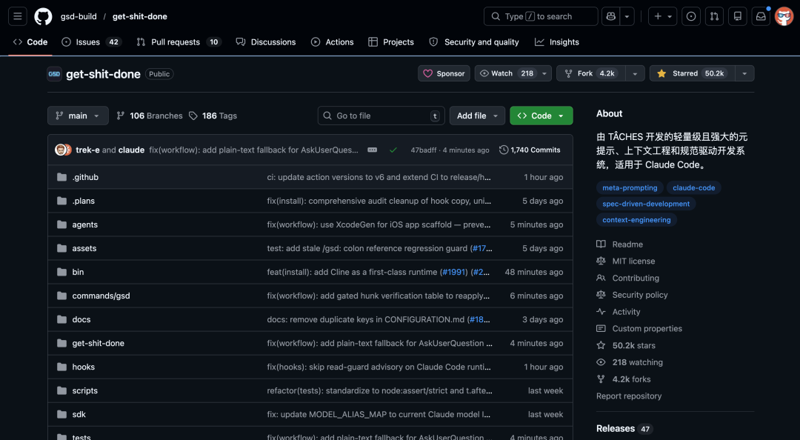
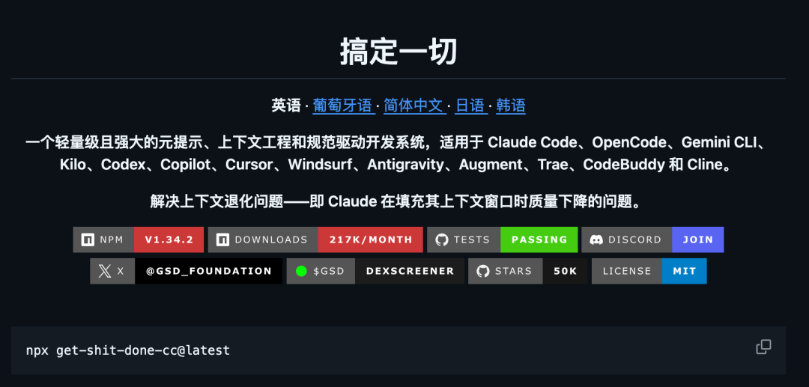
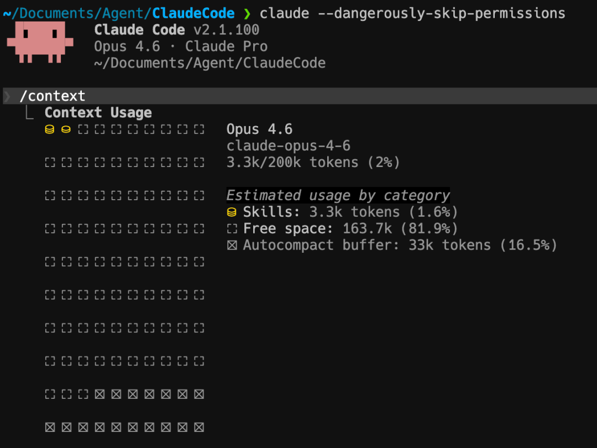
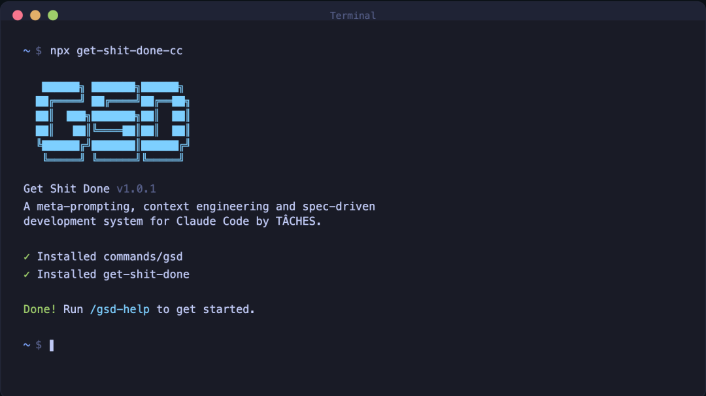
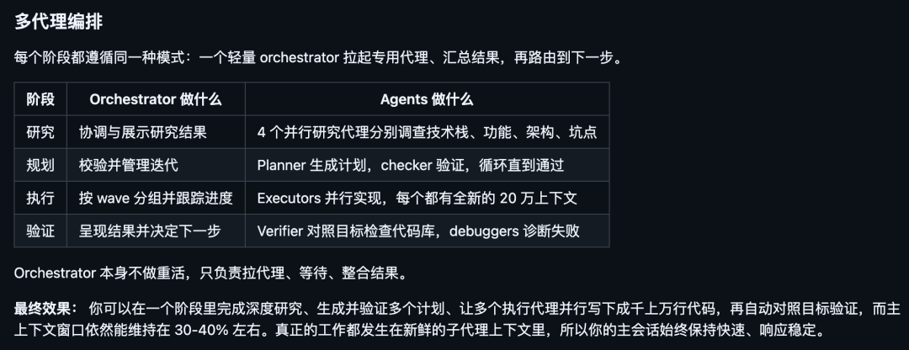
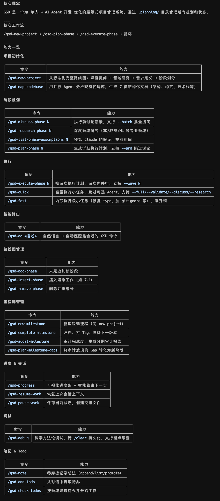

这个数据放在 GitHub 历史上都算比较顶的。
最近如果你刷 X 或者小红书，大概率刷到过一个叫 GSD（Get Shit Done）的开源项目。
评论区里有人叫它 Claude Code 的灵魂伴侣，也有人说它是 Vibe Coding 的终结者。
看了一下，确实有点东西。

01
GSD 是个啥
一句话说清楚：GSD 是一个上下文工程框架，让 AI 在处理长程复杂任务时，始终保持高质量的稳定输出。
它解决的问题特别具体。

不管你用 AI 写代码、做调研、搭产品还是搞方案，只要任务一长、对话一多，AI 的输出质量就会断崖式下跌。
回答越来越短，需求开始漏，逻辑也开始乱。
这个现象有个名字，叫上下文腐烂（Context Rot）。
GSD 就是来解决这个问题的。
估计很多人和我一样，比如用 Claude Code 的时候，有一个重要任务的时候老想看看目前 Context 的情况。
看看要不要 clear 或压缩一下再跑。

它不是让你跟 AI 聊着天把活干了，而是把你的大任务拆成一个个小任务。
每个小任务交给独立的 Agent 在全新的上下文窗口里执行，中间有研究员帮你调研、规划师帮你拆任务、执行者帮你干活、验证者帮你检查。
整个过程中，你的主窗口始终保持干净，不会被历史垃圾塞满。

目前这个项目在 GitHub 上斩获了 49,200+ Star，全球排名 407。作者是个独立开发者。
开源地址：https://github.com/gsd-build/get-shit-done02
核心特性
看了一下这个项目，有几个点非常扎实。
① 彻底解决上下文腐烂
这是 GSD 最核心的卖点。
传统用法里，你跟 AI 聊了 50 轮之后，上下文窗口快满了，AI 的输出质量就开始拉胯。
GSD 的做法是，每个子任务都在一个全新的 200k token 上下文窗口里独立执行。
你的主对话窗口只负责协调，始终保持在 30-40% 的使用率。
说白了，就是让 AI 永远在巅峰状态干活，不会越干越差。
② 多 Agent 并行协作
GSD 不是让一个 AI 从头干到尾，而是把任务拆分之后分给不同的专职 Agent：
研究员负责调研技术方案和领域知识 规划师负责把任务拆成可执行的原子计划 执行者负责在独立上下文里写代码、干活 验证者负责检查交付成果是否达标
而且独立的任务会自动并行执行，不是排着队一个一个来。

GSD 把任务分成不同的 Wave，同一个 Wave 里的任务同时跑，有依赖关系的排到后面的 Wave。效率拉满。
③ 结构化的任务指令
每个执行计划都是 XML 格式的，精确到具体文件路径、执行步骤、验证标准、完成条件。
AI 不用猜你要什么，照着指令一步步做就行。
举个例子，一个典型的计划长这样：
<task type="auto"><name>创建登录接口</name><files>src/app/api/auth/login/route.ts</files><action>用 jose 库做 JWT（别用 jsonwebtoken，有 CommonJS 兼容问题）。验证用户凭据。成功后返回 httpOnly cookie。</action><verify>curl 请求登录接口返回 200 + Set-Cookie</verify><done>有效凭据返回 cookie，无效凭据返回 401</done></task>
清晰、精确、可验证。
AI 照着这个干活，出错率大幅下降。
④ 自动状态追踪和断点续干
GSD 会自动维护一套完整的项目状态文件：项目愿景、需求文档、路线图、决策记录、阻塞项、已完成的工作。
这些东西跨会话持久保存，你今天干到一半关了电脑，明天打开接着干，上下文完全不丢。
甚至还有个 /gsd-pause-work 命令，专门用来生成交接文档。
关机前跑一下，下次回来 /gsd-resume-work，无缝衔接。
⑤ 一行命令安装，覆盖 12+ AI 工具
不只是 Claude Code，GSD 支持的工具非常多：
Claude Code、OpenCode、Gemini CLI 等等，基本市面上主流的 AI 编码工具全覆盖了。
安装就一行命令。
跑起来之后会让你选用哪个工具、装全局还是装当前项目，选完就搞定了。
03
完整工作流

GSD 的使用流程非常清晰，按顺序走就行。我用一个从零搭产品的场景来串一遍：
第一步：初始化项目
/gsd-new-project跑起来之后，GSD 会先问你一堆问题，搞清楚你到底想做什么、有什么约束、技术偏好是啥。
然后自动派研究员去做领域调研，再把需求拆成 v1、v2 和暂不考虑三档，最后生成一份路线图。
你确认路线图没问题，就可以开始干活了。
第二步：讨论细节
/gsd-discuss-phase 1路线图上每个阶段只有一两句话的描述，不够详细。
这一步就是让你把具体偏好和想法告诉系统。比如你想用什么布局风格、接口格式怎么做、错误处理怎么搞。
系统会把你的偏好整理成一份 CONTEXT 文档，后续的研究和规划都会参考。
你聊得越细，最终交付的东西就越贴近你的想法。
第三步：规划阶段
/gsd-plan-phase 1系统自动派研究员去调研实现方案，然后规划师生成 2-3 个原子任务计划，每个计划都有精确的 XML 结构。
还有个检查员会验证计划是否覆盖了所有需求，不通过就打回去重做，直到通过为止。
第四步：执行阶段
/gsd-execute-phase 1这是最爽的部分。
所有计划按依赖关系分成不同 Wave，同一 Wave 里的任务并行跑。
每个任务都在独立的 200k token 上下文窗口里执行，互不干扰。每完成一个任务就自动生成一个 Git commit。
你基本可以走开去干别的，回来一看，活干完了，Git 历史还特别干净。
第五步：验收成果
/gsd-verify-work 1系统会把每个可交付的成果列出来，带着你一项一项确认。
哪没问题就过，哪有问题就自动派调试 Agent 去查原因，然后生成修复计划，跑一遍 /gsd-execute-phase 就修好了。
嫌一步步太麻烦？还有个快速模式：
/gsd-quick适合那种不需要完整流程的临时任务。
或者直接用 /gsd-next，系统自动判断你现在该干啥，一步到位。
04
不只是写代码
虽然 GSD 目前最大的用户群是开发者，但它的核心能力：上下文管理、多 Agent 协作、结构化任务拆解。
其实适用于任何需要 AI 长时间、高质量完成的复杂任务。
比如你想让 AI 帮你做一份深度行业调研报告，传统做法是不断追问，聊着聊着 AI 就开始敷衍你了。
用 GSD 的话，它会自动拆分成调研、分析、撰写、验证几个阶段，每个阶段独立执行，最终交付的质量稳定得多。
再比如你想从零搭建一个产品的完整方案，从市场分析到技术选型到架构设计到实施计划，这种多阶段的长程任务，正是 GSD 最擅长的场景。
作者自己就是最好的例子。
他在 README 里写得很直接：我是一个独立开发者，我不写代码，Claude Code 写。
GSD 就是他用来驱动 Claude Code 给他干活的系统。
Amazon、Google、Shopify、Webflow 的工程师也在用这个东西。
05
怎么上手
安装非常简单：
npx get-shit-done-cc@latest如果你用 Claude Code，官方建议搭配这个参数跑：
claude --dangerously-skip-permissions原因是 GSD 的设计理念就是自动化执行，如果你不想每隔几秒钟就点一次确认，跳过权限检查会让体验流畅很多。
装完之后在 Claude Code 里输入 /gsd-help，能看到所有可用命令。
如果你已经有一个进行中的项目，先跑 /gsd-map-codebase 让它扫描一下现有代码，再跑 /gsd-new-project 初始化就行。
06
点击下方卡片，关注逛逛 GitHub
这个公众号历史发布过很多有趣的开源项目，如果你懒得翻文章一个个找，你直接关注微信公众号：逛逛 GitHub ，后台对话聊天就行了：